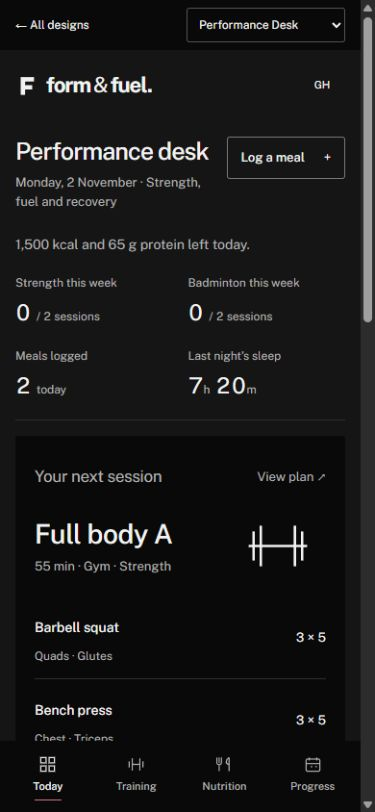
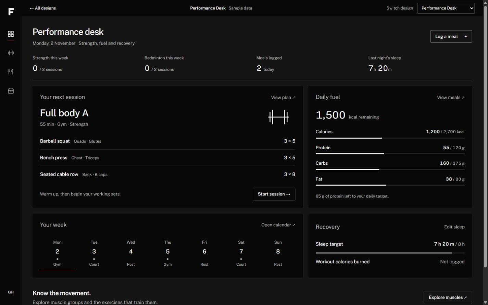
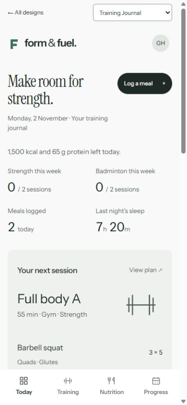
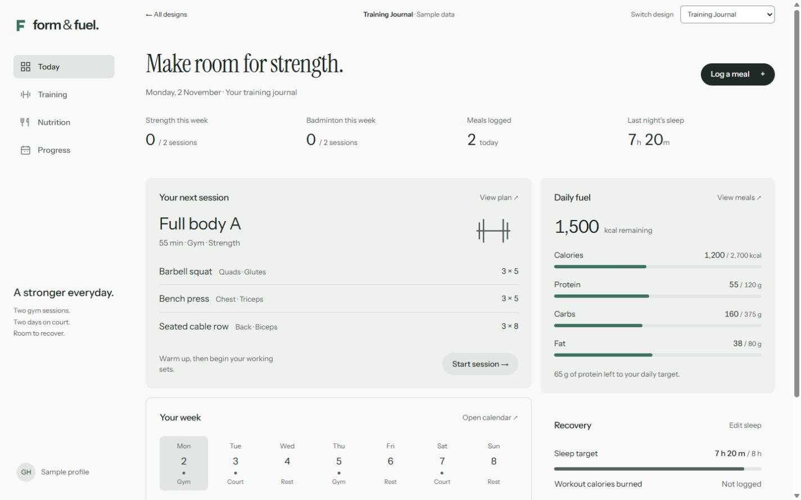
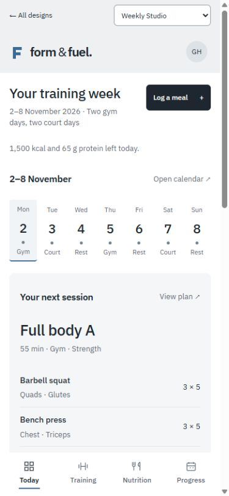
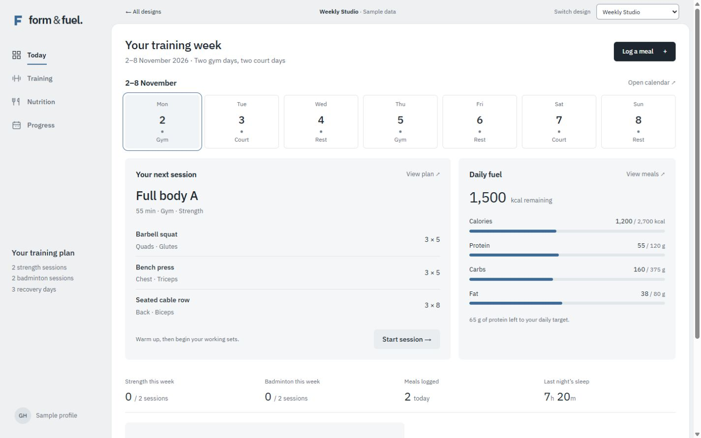

Performance Desk
A focused, dark workspace. Compact numbers and an icon rail put training and fuel side by side.
- Best for
- Fast daily check-ins
- Design direction
- Charcoal · Public Sans · Sharp edges
See the phone layout


The same workouts, food log and muscle explorer.
Three different ways to make them part of your day.
Interactive design previews with sample data. Your live site and account are separate.
A focused, dark workspace. Compact numbers and an icon rail put training and fuel side by side.


A lighter, calmer companion. Editorial type, an agenda column and a quiet food-and-recovery rail.


Plan the week before the next rep. A seven-day schedule leads into the workout, meals and recovery.


Open any design and switch between Today, Training, Nutrition and Progress. Try the front/back muscle map, log a sample meal, record sleep in hours and minutes, or select a calendar day.
All three share the same sample records. Demo edits reset on reload; Google sign-in and cloud saving remain in your existing website.
Compare with the previous black-and-red concept ↗